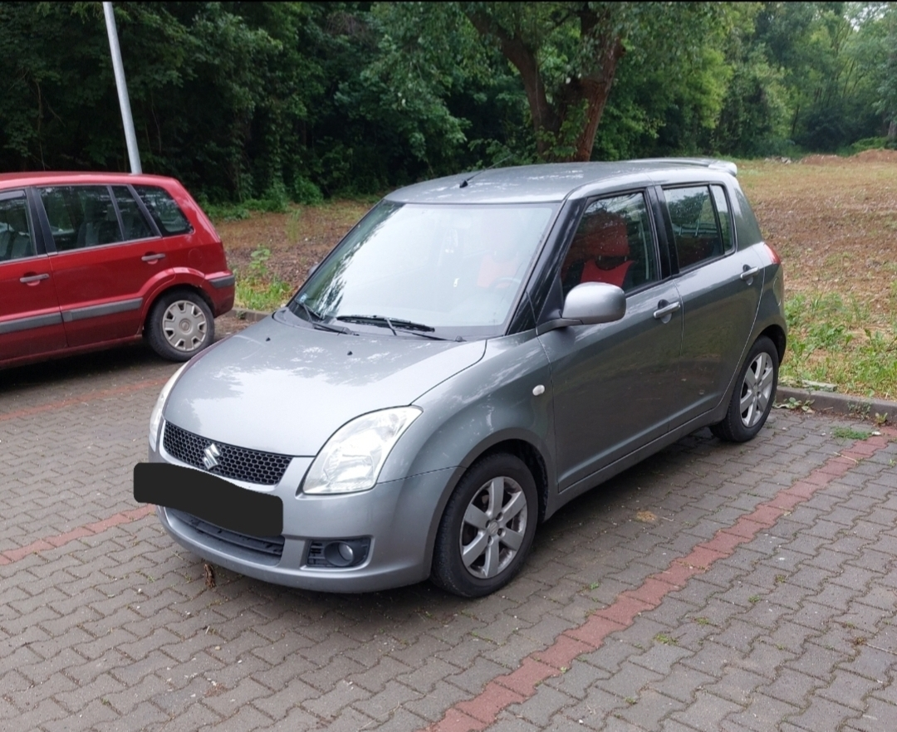
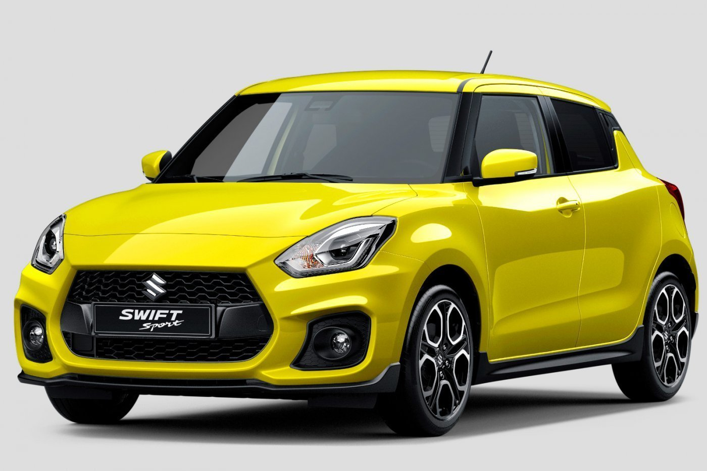

A Suzuki Swift a Suzuki Motor Corporation legnépszerűbb, részben Magyarországon gyártott kiskategóriás autója. Több mint 10 millió darabot gyártottak belőle világszerte. Japánban 1983-tól 1998-ig Suzuki Cultus modellnéven forgalmazták. Észak-Amerikában Suzuki Forsa volt a neve (ill. Geo Metro). Jelenleg Japánban, Mexikóban és Magyarországon a hatodik, az Egyesült Államokban pedig a nyolcadik generációját gyártják.
Az első generációt 1983-tól gyártották, eredetileg SA-310, majd 1986-tól Swift néven. 993 cm³-es, 3 hengeres motorja 50 LE (37 kW) leadására volt képes, 0-ról 100 km/h-ra (67 mph) 17,9 másodperc alatt gyorsult fel. Végsebessége 141 km/h (88 mph) volt. Motorját (G10) rendkívül könnyűre építették, mindössze 63 kg-ot nyomott. A kis autó felfüggesztését a Suzuki Altótól kölcsönözték.
A Swiftet az elmúlt két évtizedben különböző piacokon más-más néven árusították:

| Változat | Gyártás kezdete | Gyártás vége |
|---|---|---|
| Suzuki Swift MK1 | 1983 | 1988 |
| Suzuki Swift MK2 | 1988 | 1993 |
| Suzuki Swift MK3 | 1993 | 2004 |
| Suzuki Swift MK4 | 2004 | 2010 |
| Suzuki Swift MK5 | 2010 | 2017 |
| Suzuki Swift MK6 | 2017 | jelen |
Nemzetközi bajnokság állása
| Pos. | No. | Pilóta | Csapat | Végeredmény |
|---|---|---|---|---|
| 1. | 550 | Bernula István | GFS Racing Team | 255 |
| 2. | 547 | Németh Eszter | UNI Győr WMS | 214 |
| 3. | 131 | Bastian Frischmann | Suzuki Team Austria | 146 |
| 4. | 512 | Major Benedek | GFS Racing Team | 139 |
| 5. | 505 | Hartmann Balázs | GFS Racing Team | 138 |
| 6. | 500 | Burkus Egon | GFS Racing Team | 127 |
| 7. | 555 | Borys Lisiecki | Darek Nowicki Racing | 102 |
| 8. | 527 | Mészáros Ádám | GFS Racing Team | 75 |
| 9. | 504 | György Balázs | GFS Racing Team | 70 |
| 10. | 521 | Keller Vince | Car Competition Racing | 55 |
| 11. | 558 | Nagy Benjamin | GFS Racing Team | 42 |
